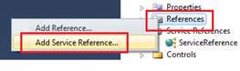
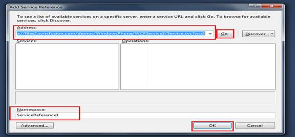

Data binding using WCF enables populating items into the Chart control from a website used as a WCF service and includes the ServiceReference into the application.
 Note: To know how to Host a WCF application,
kindly refer to section 5.1 How To Create WCF Data Binding Service?
Note: To know how to Host a WCF application,
kindly refer to section 5.1 How To Create WCF Data Binding Service?
Once the Service is successfully hosted in the internet, you will be given a link to download the configuration files and codes, in order to implement the data communication.
Note: This sample is shown using Array as the data
type since the same has been used during the deployment of SyncFusion’s Service
application.
The present link of Syncfusion’s Service Reference is: http://files2.syncfusion.com/demos/WindowsPhone/WCFService3/Service.svc?wsdl
To configure WCF for implementing in Chart Control:
1. Open the Sample Browser in Visual Studio.
2. Right-click the Reference tab in Solution Explorer and select Add Service Reference.

Figure 18: Adding Service Reference
3. Enter the above link in the URL tab, name the service and click OK.

Figure 19: Adding the url and configuring the service reference
4. Once all the service reference is being configured in the application, go to the code page that contains the Chart control and include the following namespaces:
|
[C#] using SampleBrowser.ServiceReference; using System.ServiceModel; using System.Runtime.Serialization; using System.Collections.ObjectModel;
|
5. Add the following code to populate the AutoComplete Control.
|
[C#] class LiveChart : usercontrol { ImyserviceClient channel = new ImyserviceClient("BasicHttpBinding_Imyservice"); // channel is created for commumication, //ImyserviceClient is the class used by sync fusion in the service
DispatcherTimer timer2;// timer object LiveChart() { timer2 = new DispatcherTimer(); // initialise the timer object timer2.Tick += new EventHandler(timer2_Tick); // event handler to trigger the tick function every second to populate the live chart channel.getlchartCompleted += new EventHandler<getlchartCompletedEventArgs>(channel_getlchartCompleted); // event handler to invoke once // the data in fetched timer2.Start(); // start the timer function channel.getchartAsync(); // function to fetch the data } public static List<string> word = new List<string>();
int vals1, vals2; // two variables to store the chart's data ChartSeries series = new ChartSeries();
void channel_getlchartCompleted(object sender, getlchartCompletedEventArgs e) { vals1 = e.Result[0]; vals2 = e.Result[1];
datas.Add(new XYValue(1, q[0]));
series.DataSource = datas;
//Initialize the Property name in Model object that provides values to X-Axis. series.BindingPathX = "X";
//Initialize the Property name in Model object that provides values to Y-Axis. series.BindingPathsY = new List<string>() { "Y" };
}
void timer2_Tick(object sender, EventArgs e) { channel.getlchartAsync(); }
private void UserControl_Unloaded(object sender, RoutedEventArgs e) { timer2.Stop(); ServicesClass.timer2.Stop(); }
}
|
Note: Other factors such as timeout, endpoints
while creating a service, binding options and so on have to be :.2Completed by including the s same.brief out the
possibilities of binding the data dynamicallyequirement.
configured as per the requirement. The above WCF sample procedure is just to brief out the possibilities of binding data dynamically.